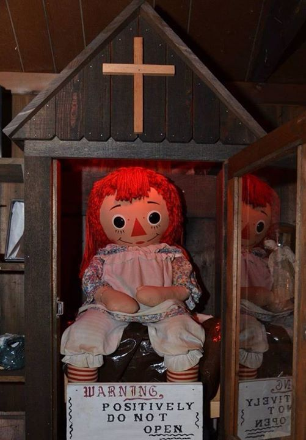
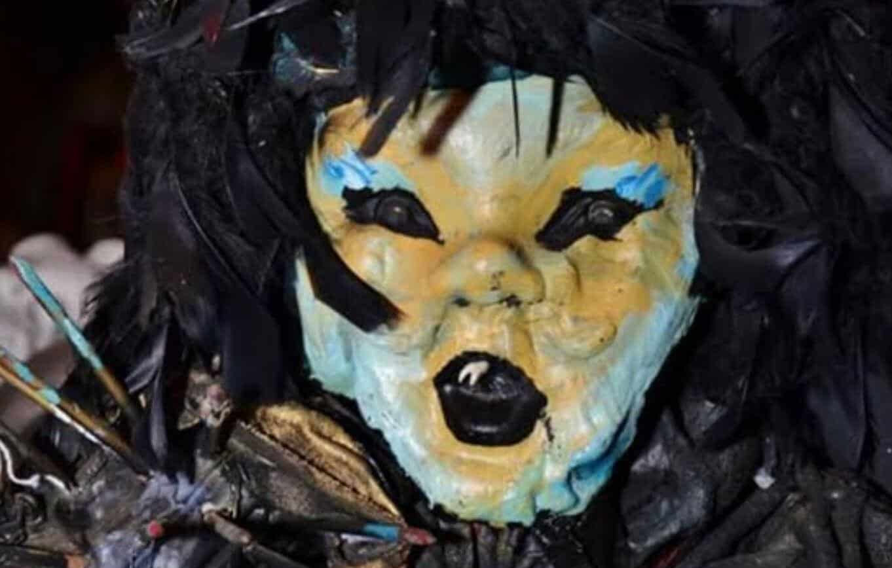
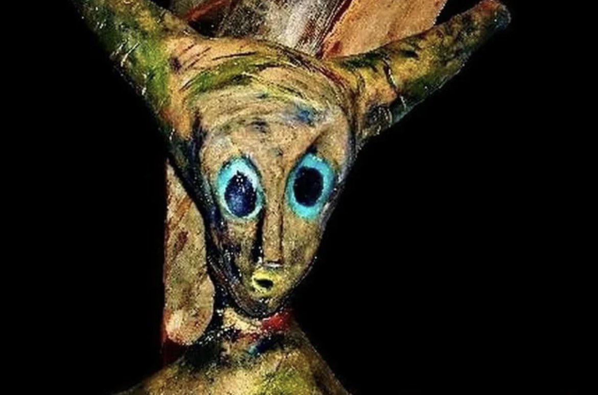

Los Warren poseen un museo de ocultismo, situado en Monroe, Connecticut, Estados Unidos, que fue inaugurado en la década de los 80. El matrimonio guardaba los objetos más espeluznantes de sus investigaciones en el sótano de su casa, al que acudía un cura a menudo para bendecir las piezas. Por desgracia, después del fallecimiento de la pareja de demonólogos y tras quejas de vecinos (puesto que se encontraba en una casa de una calle residencial y no estaba siendo usada como tal), el museo tuvo que cerrar. Actualmente, Tony Spera es quien está a cargo de la colección y en 2019 dijo que intentaría volver a abrirlo al público en algún futuro
Sus inicios, localización y actual dueño
¿Qué podemos encontrar ahí?
En el museo, se podían encontrar objetos que, como ha sido mencionado anteriormente, han formado parte en casos paranormales/demoníacos en los que Ed y Lorraine se han visto involucrados o que han sido utilizados para rituales, asesinatos e incluso suicidios. A todos los visitantes se les advierte de que no deben tocar nada, debido a que los objetos están endemoniados y, algunos de ellos, pueden poseer a los humanos con esa simple acción.
Annabelle

Gracias a las aclamadas películas de terror basadas en los Warren reales y los casos en los que se han visto implicados, la muñeca Annabelle ha ganado mucha fama. Cierto es que la que aparece en las películas posee un aspecto más aterrador que la verdad. No obstante, la muñeca de trapo es considerara uno de los objetos más peligrosos, puesto que la entidad que habita en ella es tan poderosa, que no fueron capaces de realizarle un exorcismo. Por esta razón, fue encerrada en una caja, para contener la energía.
En los años 70, Annabelle fue comprada por una enfermera para su hija. Rápidamente, la madre lamentó haberle hecho ese regalo. Las chicas reportaron que encontraban a la muñeca en lugares en los que no la habían dejado, además de notas que ninguna de ellas había escrito, en las cuales estaba escrito "help us" (ayúdanos). La muñeca pretendía estar poseída por una niña pequeña, pero tras una sesión de espiritismo, se llegó a la conclusión de que no era una niña, sino un demonio.
A pesar de estar encerrada en una caja que es bendecida periódicamente por un cura, es capaz de maldecir a las personas. Un ejemplo de ello sucedió hace unos años, cuando una pareja fue al museo y, al observar a Annabelle, se rieron. Esa pareja se vio involucrada en un accidente de moto de camino a su casa tras la finalización de su visita al museo. Por suerte, no les pasó nada grave y habrán aprendido que no se debe "jugar" con los espíritus.
Shadow doll

Dado su notable fama debido a las películas, Annabelle es el objeto por el cual muchas personas decidían adentrarse en el escalofriante museo. No obstante, hay una muñeca aún más aterradora que Annabelle: the Shadow Doll.
Esta muñeca está hecha, en su mayoría, con huesos de humanos; algunas partes (como los dientes y las uñas) están fabricadas con partes de distintos animales.
Al contrario que Annabelle, esta muñeca no fue fabricada con el objetivo de ser una simple muñeca de decoración. La razón por la que fue creada es para ser objeto de maldiciones y aterrorizar a la gente. La manera en la que se consigue dicho objetivo es mediante un ritual. El creador realizó dicha acción de manera que, al darle una foto de una persona a la muñeca, ésta le causaría daño. Se dice que si alguien ve alguna de esas fotos, también se maldeciría.
La forma en la que actuaba la muñeca es a través de los sueños. Aprovechaba cuando las víctimas estaban dormidas para atormentarles. Producía tales pesadillas que era capaz de causarle un infarto a las indefensas personas, causando su muerte.
Puede que os estéis preguntando "si es capaz de causar la muerte de las personas, ¿por qué no se destruye para acabar con la maldición?". La respuesta es muy simple, los espíritus que fueron invocados durante el ritual de su creación son muy poderosos, por lo que seguirían a quien haya osado destruirla. Los espíritus podrían tanto causarles la muerte, como poseerles.
Satanic idol

Esta figura fue encontrada en los bosques de Sandy Hook, en Connecticut por un cazador, quien se encontró a un anciano con ropajes negros poco después. El cazador tuvo una escalofriante sensación, por lo que decidió contactar con los Warren.
Al verla, los Warren pensaron que lo más probable es que fuese usada para rituales, puesto que este tipo de figuras son muy comunes en esas actividades. Desde entonces, el ídolo satánico ha estado guardado en el museo, siendo bendecido periódicamente. A pesar de ello, siguió causando problemas a pesar de tener su energía contenida. Tras su llegada al museo, Lorraine se encontraba mal y no era capaz de explicar lo que le estaba ocurriendo. Ed pensaba que podría deberse a que una secta satánica puso una maldición en su familia a través de este ídolo.